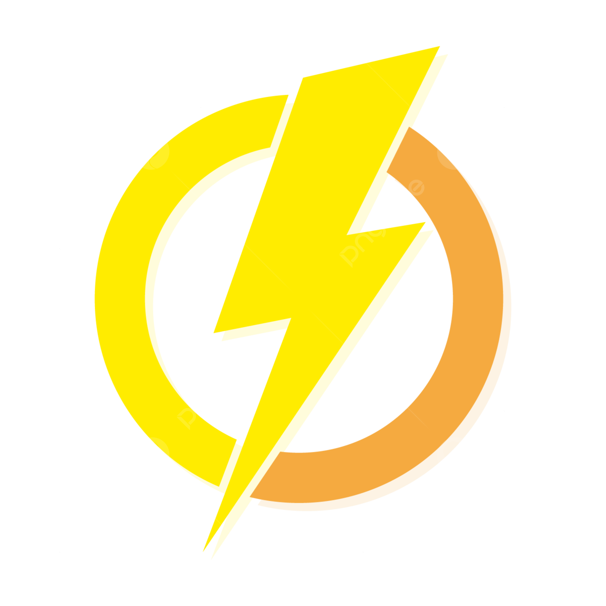

HYPER BI
Certificación
Tiktok
Instagram
Youtube
Certificación Hyper BI
Responde las preguntas y demuestra tu conocimiento en Power BI.
¿Cuál es la principal ventaja de usar Power BI en lugar de Excel para el análisis de datos?
A. Power BI permite la creación de informes interactivos y visuales.
B. Power BI no requiere una conexión a internet para funcionar.
C. Power BI puede importar datos desde fuentes que Excel no puede manejar.
D. Power BI es más barato que Excel.
¿Qué tipo de visualización en Power BI se utiliza para mostrar la relación entre variables?
A. Gráfico de barras
B. Diagrama de dispersión
C. Gráfico circular
D. Mapa geográfico
¿Cuál de las siguientes opciones NO es un tipo de visualización disponible en Power BI?
A. Gráfico de área
B. Gráfico de Gantt
C. Diagrama de Venn
D. Mapa de calor
¿Cómo se llama la función de Power BI que permite combinar datos de diferentes tablas basadas en una columna común?
A. Union
B. Merge
C. Join
D. Append
¿Qué formato de archivo se utiliza comúnmente para guardar los informes de Power BI para compartir con otros usuarios?
A. .pbix
B. .xlsx
C. .pdf
D. .csv
¿Cuál es la diferencia principal entre Power BI Desktop y Power BI Service?
A. Power BI Service es una versión más barata que Power BI Desktop.
B. Power BI Desktop es para usuarios de escritorio, mientras que Power BI Service es una plataforma en línea.
C. Power BI Desktop permite la colaboración en tiempo real, mientras que Power BI Service no.
D. Power BI Service permite la creación de informes, mientras que Power BI Desktop solo los visualiza.
¿Qué tipo de datos se pueden cargar en Power BI?
A. Archivos Excel, bases de datos SQL y servicios en la nube como Azure
B. Solo archivos CSV
C. Solo bases de datos SQL
D. Ninguna de las anteriores
¿Qué es un "Dashboard" en Power BI?
A. Un conjunto de páginas con visualizaciones interactivas.
B. Una sola visualización en un reporte.
C. Un documento que se envía por correo.
D. Ninguna de las anteriores.
¿Cómo se puede compartir un informe de Power BI con otras personas?
A. A través de Power BI Service
B. Exportándolo como archivo PDF
C. Publicando en un sitio web
D. Todas las anteriores
¿Qué tipo de licencia se necesita para utilizar Power BI en una empresa?
A. Power BI Pro
B. Power BI Free
C. Power BI Premium
D. Ninguna de las anteriores
Comprobar
Descargar